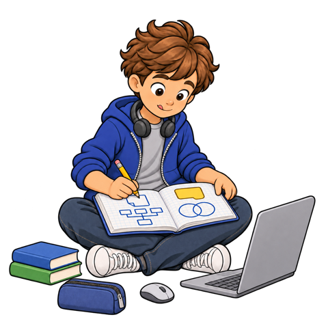

Объекты, множества и системы
!Жёлтые блоки — определения из учебника и презентаций к урокам, слово в слово. Их нужно знать наизусть. Остальное — главные мысли коротко и схемы.
Объекты окружающего мира
- объект
- множество
- общее имя
- единичное имя
- собственное имя
- свойства объекта
- действия объекта
- поведение объекта
- состояние объекта
Объекты и множества
Объект — это любая часть окружающей действительности (предмет, процесс, явление), воспринимаемая человеком как единое целое. Объектами принято называть всё то, на что обращено внимание человека.
Предметы
телефон, стол, книга, кошка
Процессы
каникулы, учёба, чтение, поездка
Явления
гроза, солнечное затмение, снегопад
Множество — это совокупность, набор, коллекция объектов. Объекты, составляющие некоторое множество, называются его элементами.
- В множестве может быть три, два, один элемент — или ни одного: пустое множество (например, множество отличников в классе).
- Конечное множество — буквы русского алфавита. Бесконечное — натуральные числа.
Имена объектов
Каждый объект имеет имя, которое позволяет отличать его от других объектов. Имя отвечает на вопрос «Что это такое?» или «Кто это такой?». У одного объекта может быть много имён: собаку зовут Каштанкой, пёсиком, домашним животным или просто животным.
Имена бывают общими, обозначающими множество объектов, и единичными, обозначающими конкретный объект в некотором множестве.
Как выбрать общее имя
Общее имя выбирают так, чтобы оно:
1) подходило каждому объекту из множества;
2) наиболее точно описывало рассматриваемое множество.
Лондон, Манчестер, Ливерпуль → лучше всего «город в Англии», а не просто «город».
Как выбрать единичное имя
У всех объектов множества имена должны быть разными.
Одна берёза во дворе — хватит имени «берёза». Две берёзы — нужны «берёза у окна» и «берёза у колодца».
Чтобы обойтись без таких длинных обозначений, для некоторых видов объектов (людей, домашних животных, книг, журналов, кинофильмов, географических объектов, планет и т. д.) используются собственные имена. Например: Александр Сергеевич Пушкин, роман «Война и мир», Мухтар, Москва, Ангара, кинофильм «Морозко», Луна.
Объекты изучения в информатике
Разные науки изучают одни и те же объекты с разных сторон: космические тела — астрономия, земную поверхность — география, растения и животных — биология.
Информатика — наука, изучающая закономерности протекания процессов передачи, хранения и обработки информации в природе, обществе, технике, а также способы автоматизации этих процессов с помощью компьютера.
Объектами изучения в информатике являются информация, информационный процесс, алгоритм, исполнитель, компьютер, включая его аппаратное и программное обеспечение, и т. д.
Признаки объектов
Кроме имени в сообщении об объекте человек может подробно перечислить его признаки: свойства, действия, поведение, состояния.
Свойства
Какой он? Чем отличается от других?
Действия
Что он делает? Что с ним можно делать?
Поведение
Как именно он это делает, по шагам?
Состояние
Каким он стал сейчас?
Свойства объектов отвечают на вопросы: «Чем может отличаться один объект от другого?», «Что может измениться у объекта при выполнении действия?».
Собаки отличаются окрасом, города — численностью населения, реки — длиной.
Каждое свойство определяется некоторой величиной и тем значением, которое она принимает.
Величины: цвет, материал, форма, длина. Значения: красный, железный, прямоугольный, 2 м.
| Объект | Свойство | Величина | Значение величины |
|---|---|---|---|
| Человек | Голубоглазый | Цвет глаз | Голубой |
| Человек | Высокий | Рост | > 180 см |
| Дом | С пятью окнами | Количество окон | 5 |
| Файл | Большой | Размер | 34,6 Мбайт |
| Файл | Графический | Тип | Рисунок BMP |
Возможности объекта обозначаются именами действий, отвечающими на вопросы: «Что он может делать?» (активное действие) или «Что с ним можно делать?» (пассивное действие).
Далматин бегает (активное). Воздушный шар можно надуть, файл — переименовать, удалить (пассивное).
Чтобы описать поведение объекта, нужно не просто назвать имена действий, а составить пошаговое описание каждого действия, свойственного этому объекту.
Одно и то же действие разные объекты выполняют по-разному: птицы, воздушные шары и вертолёты летают неодинаково.
Говоря о состоянии объекта, мы называем или подразумеваем определённое сочетание всех или некоторых свойств этого объекта.
Когда с объектом выполняется действие, его состояние изменяется.
Компьютерные объекты
- типы компьютеров
- программное обеспечение
- операционная система
- файл
- имя файла
- папка
- путь к файлу
- полное имя файла
- двоичный код
- размер файла
- бит, байт, килобайт, мегабайт, гигабайт
Разнообразие компьютеров
Компьютер — важнейший объект не только информатики, но и жизни современного человека.
Суперкомпьютеры — очень большие компьютеры, значительно превосходящие по своим техническим параметрам и скорости вычислений все другие компьютеры.
Файлы и папки
Все программы и данные в устройствах долговременной памяти компьютера хранятся в виде файлов, которые, в свою очередь, группируются в папки. Основные компьютерные объекты — файлы (документы и приложения), папки.
Файл — это информация, хранящаяся в долговременной памяти как единое целое и обозначенная именем.
Имя файла, как правило, состоит из двух частей, разделённых точкой: собственно имени файла и расширения. Расширения необязательны, но они широко используются: расширение позволяет пользователю, не открывая файл, определить, какого типа данные (программа, текст, рисунок и т. д.) в нём содержатся.
Докладсобственно имя.точкаdocxрасширение- Имя может быть длиной до 255 символов, в нём можно использовать русские буквы и пробелы. Расширение пишут после точки, обычно это 3 символа.
- В Windows в имени файла нельзя использовать: \ / : * ? " < > |
- В Linux можно всё, кроме /, и Linux различает большие и маленькие буквы: FILE.txt, file.txt и FiLe.Txt — три разных файла.
Файлы, содержащие данные (рисунки, тексты), ещё называют документами. Файлы-документы создаются и обрабатываются с помощью прикладных программ (приложений).
Свойства файла: тип, размер, дата создания, дата последней модификации.
Текстовые
txt, doc, rtf, odt
документы с текстом
Графические
bmp, jpg и др.
изображения
Звуковые
wav, mid, mp3 и др.
голоса и музыка
Все файлы хранятся в определённой системе: в папках (каталогах), которые, в свою очередь, могут содержаться в других папках (быть вложенными в них) и т. д. Каждый каталог также получает собственное имя.
Папка — группа файлов, объединённых по некоторому принципу, имеющая имя.
Папка может входить в состав другой, внешней по отношению к ней папки. Папка (каталог) самого верхнего уровня называется корневой папкой (корневым каталогом).
- Диск C:
- Учёба
- Информатика
- Доклад.docx
- Схема.bmp
- Русский язык
- Сочинение.txt
- Информатика
- Музыка
- Песня.mp3
- Учёба
Папки похожи на шкафы и полки в библиотеке: книга (файл) стоит на полке (в папке), полка — в шкафу (в другой папке). Так любой файл легко найти.
Путь к файлу — имена всех каталогов от корневого до того, в котором непосредственно находится файл.
Последовательно записанные путь к файлу и имя файла составляют полное имя файла. Не может быть двух файлов, имеющих одинаковые полные имена.
C:\Учёба\Информатика\путь к файлуДоклад.docxимя файлаС файлами чаще всего выполняют четыре действия — как с книгами в библиотеке:
| Действие с файлом | Как это выглядит в библиотеке |
|---|---|
| Модификация — открыть файл, внести изменения, сохранить под тем же именем | Отреставрировать книгу и поставить на место |
| Копирование — скопировать файл и сохранить в другой папке | Сделать копию книги и поставить в другой шкаф |
| Удаление | Списать книгу из библиотеки |
| Перемещение | Переставить книгу в другой шкаф |
При работе с файлами не следует:
- удалять файл, точно не выяснив, обязательно ли это следует делать;
- давать файлу имя, которое не поясняет его содержание;
- сохранять файл в той папке, где его потом будет трудно найти;
- удалять или перемещать файлы, находящиеся в папках прикладных программ, — это может привести к тому, что программы перестанут работать.
Представление данных в компьютере
Двоичный код — это способ представления чисел, слов, изображений, аудио, видео и мультимедийной информации с помощью двух знаков: 0 и 1.
Двоичный алфавит — алфавит из двух знаков (символов) — 0 и 1.
Двоичное слово — любая последовательность 0 и 1.
| Символов в слове | 1 | 2 | 3 | 4 | 5 | 6 | 7 | 8 |
|---|---|---|---|---|---|---|---|---|
| Разных слов | 2 | 4 | 8 | 16 | 32 | 64 | 128 | 256 |
Восьмисимвольными словами можно закодировать все символы, имеющиеся на клавиатуре. Соответствие символов и двоичных слов задаётся с помощью кодовых таблиц.
Графические объекты в компьютере создаются и хранятся двумя способами — в виде растрового или векторного изображения.
Растровое изображение — это изображение, которое запоминается как совокупность разноцветных точек (пикселей). Цвету каждого пикселя ставится в соответствие двоичное слово.
Векторное изображение — это изображение, которое может быть «собрано» из отрезков, окружностей, дуг, прямоугольников и других геометрических фигур и запоминается как набор команд, необходимых для построения этих фигур на экране. Такое описание делается с помощью символов некоторого алфавита и с помощью кодовых таблиц преобразуется в двоичный код.
Размер файла
Память компьютера удобно представить как лист в клетку. В каждой «клетке» хранится только одно из двух значений: нуль или единица.
Каждая «клетка» памяти компьютера называется битом. Так, для хранения одного произвольного символа (буквы, цифры, знака препинания и пр.) может использоваться 8 битов. 8 битов составляют 1 байт.
Один двоичный символ — это один бит. Бит — самая маленькая единица измерения информации.
Более крупные единицы — килобайт, мегабайт, гигабайт:
Объём компьютерных информационных носителей измеряется в мегабайтах и гигабайтах.
Задача из учебника. Сколько словарей Ожегова поместится на лазерный диск 700 Мбайт?
Объекты операционной системы
Совокупность всех программ, предназначенных для выполнения на компьютере, называют программным обеспечением (ПО) компьютера.
Операционная система — это комплекс программ, обеспечивающих совместное функционирование всех устройств компьютера и предоставляющих пользователю доступ к ресурсам компьютера.
- Объекты ОС: рабочий стол, панель задач, окна документов, папок, приложений.
- Все объекты (программы, документы, папки, диски) изображаются на экране небольшими картинками — значками.
- Контекстное меню открывается щелчком правой кнопкой мыши. В нём — все действия с объектом. Последний пункт — Свойства: можно узнать свойства объекта и изменить некоторые из них.
- Окно Компьютер (Мой компьютер) содержит значки всех устройств, на которых можно хранить файлы.
Значки файлов с данными
рисунок, документ Word
Значки файлов-программ
Калькулятор, WordPad
Значки папок
жёлтая папка
Ярлыки
значок со стрелкой — быстрый доступ к папке, программе или документу
Отношения объектов и их множеств
- отношение
- «является элементом множества»
- «входит в состав»
- схема отношения
- схема состава
- круги Эйлера
Разнообразие отношений
Человек может рассказать не только о признаках объекта, но и об отношениях, в которых этот объект находится с другими объектами:
- «Иван — сын Андрея»; «Эверест выше Эльбруса»; «Винни-Пух дружит с Пятачком»;
- «21 кратно 3»; «один байт равен восьми битам»; «текстовый процессор входит в состав программного обеспечения компьютера».
Выделенное слово — имя отношения, оно обозначает характер связи между двумя объектами.
Отношение — это взаимная связь, в которой находятся какие-либо объекты.
Схема отношений
- Связи между объектами рисуют линиями на схеме отношений. Объекты изображают кругами, овалами, точками, прямоугольниками.
- Если имя отношения меняется, когда объекты меняются местами («выше» — «ниже», «приходится отцом» — «приходится сыном»), направление показывают стрелкой.
- Стрелки можно не рисовать, если договориться о правиле: например, имена детей всегда ниже имени отца.
Отношения могут связывать не только два объекта, но и объект с множеством объектов или два множества:
объект ↔ объект
«Эверест выше Эльбруса»
объект ↔ множество
«является элементом множества»: «Гарри Поттер — литературный персонаж», «Москва — столичный город»
множество ↔ множество
«файлы группируются в папки», «колёса входят в состав автомобилей», «бабочки — это насекомые»
Отношения между множествами
Графически множества удобно представлять с помощью кругов, которые называют кругами Эйлера.
Пересекаются
Если множества A и B имеют общие элементы, т. е. элементы, принадлежащие одновременно A и B, то говорят, что эти множества пересекаются.
Не пересекаются
Если множества не имеют общих элементов, то говорят, что они не пересекаются.
Подмножество
Если каждый элемент множества B является элементом множества A, то говорят, что B — подмножество A.
Равны
Если каждый элемент множества B является элементом множества A и, наоборот, каждый элемент множества A является элементом множества B, то говорят, что множества A и B равны.
Отношение «входит в состав»
- В зависимости от ситуации объект может рассматриваться как единое целое либо «распадаться» на более мелкие объекты.
- Объект может состоять из множества одинаковых (однородных, подобных) объектов — апельсин из долек, класс из учеников — или множества различных объектов — компьютер из системного блока, монитора, клавиатуры.
- Описывая состав, объект мысленно «разбирают» на части: сначала крупные части, потом каждую — на части поменьше и т. д.
Схема отношений «входит в состав» (схема состава) отражает не только составные части, но и тот порядок, в котором предмет «разбирался» на части. Таким образом, она отражает строение (структуру) объекта. На схеме состава можно использовать линии без стрелок, если имя объекта-части располагать ниже имени объекта, которому принадлежит эта часть.
У сложного объекта можно назвать признаки и всего объекта, и его частей: весь дом можно строить, крышу — красить, стекло — вставлять.
Разновидности объектов и их классификация
- отношение «является разновидностью»
- схема разновидностей
- классификация
Отношение «является разновидностью»
Из двух множеств, связанных отношением «является разновидностью», одно является подмножеством другого. Например, множество попугаев является подмножеством множества птиц, множество натуральных чисел является подмножеством множества целых чисел.
Схему отношения «является разновидностью» будем называть схемой разновидностей.
На схеме разновидностей имя подмножества всегда располагается ниже имени включающего его множества.
Объекты подмножества обязательно обладают всеми признаками объектов множества (наследуют признаки множества) и кроме них имеют ещё свой, дополнительный признак (или несколько признаков).
Любое домашнее животное нужно кормить; собаки, кроме того, лают и кусаются; а ездовые собаки ещё и бегают в упряжке.
Зачем делить множества на подмножества? Человек одновременно может сосредоточиться лишь на 5–9 объектах. Поэтому большое множество делят на части, каждую часть — ещё раз и т. д. Делят не как попало, а по признакам объектов.
Классификация объектов
Подмножество объектов, имеющих общие признаки, называется классом. Деление множества объектов на классы называется классификацией. Признаки, по которым один класс отличается от другого, называются основанием классификации.
Классификация называется естественной, если в качестве её основания взяты существенные признаки объектов.
Место, занимаемое объектом в естественной классификации, позволяет судить о его признаках.
Пример: классификация живых существ Карла Линнея (1735 год). Сейчас все живые существа делят на пять царств: растения, грибы, животные, простейшие и прокариоты. Каждое царство делится на уровни:
- царствоЖивотные
- типХордовые
- классМлекопитающие
- отрядХищные
- семействоКошачьи
- родКошки
- видДомашняя кошка
На уроках русского языка вы тоже пользуетесь естественной классификацией — частей речи (самостоятельные, служебные, междометие).
Классификация называется искусственной, если в качестве её основания взяты несущественные признаки объектов.
К искусственным относятся вспомогательные классификации: список фамилий по алфавиту, алфавитно-предметные указатели, именные каталоги в библиотеках. Вспомогательная классификация не позволяет судить о признаках объектов; она служит для более лёгкого поиска объектов.
Естественная
основание — существенные признаки
Пример: живые существа по Линнею. По месту в классификации можно узнать признаки объекта.
Искусственная
основание — несущественные признаки
Пример: звёзды по созвездиям. Сами звёзды к этому делению отношения не имеют.
Вспомогательная
вид искусственной — для поиска
Пример: фамилии по алфавиту, каталог в библиотеке.
Классификация компьютерных объектов
Устройства
процессор, оперативная память, жёсткий диск, съёмный диск
Файлы
программы, документы
Связи
значки, ярлыки
Контейнеры
папки, окна, панели
Вредоносные программы и их классификация
Вредоносные программы — это специально написанные злоумышленниками компьютерные программы, которые, проникнув обманным путём в компьютер, замедляют или блокируют его работу, похищают или удаляют данные пользователя и так далее.
Вирусы
небольшие фрагменты программного кода, присоединяющие себя к другим файлам; портят данные пользователя и замедляют работу операционной системы
Черви
самостоятельные программы, способные замедлять работу компьютера, удалять файлы и даже отключать определённые программы
Троянские программы
прикидываются безопасными, но запускают свою вредоносную начинку после проникновения в компьютер
Шпионские программы
без разрешения следят за системой (например, записывают нажатия клавиш, чтобы узнать пароли)
Вымогатели
проникнув в компьютер, блокируют файлы и требуют за снятие блокировки выкуп
Системы объектов
- системный подход
- система
- структура
- системный эффект
- входы и выходы системы
- «чёрный ящик»
Разнообразие систем
Состояние сложного, составного объекта определяется не только значениями его собственных признаков, но и состояниями объектов-частей. Автомобиль переходит в состояние торможения, когда нажата педаль тормоза.
Подход к описанию сложного объекта, при котором не просто называют его составные части, но и рассматривают их взаимодействие и взаимовлияние, принято называть системным подходом. При этом сложный объект называют системой, а его части — компонентами (элементами) системы.
Система — это целое, состоящее из взаимосвязанных частей. Части, образующие систему, называются её компонентами.
Любой реальный объект достаточно сложен, поэтому его можно рассматривать как систему.
Состав и структура системы
Любая система определяется не только набором и признаками её элементов, но также взаимосвязями между элементами. Из одних и тех же элементов могут получиться разные системы:
- из одного конструктора ребёнок собирает разные сооружения;
- из одних продуктов мама готовит щи или рагу;
- алмаз и графит состоят из одного вещества — углерода. Но в алмазе молекулы образуют кристаллическую структуру (самое твёрдое вещество в природе), а в графите — слоистую (мягкий, из него делают грифели карандашей).
Структура — это порядок объединения элементов, составляющих систему.
Состав и структуру системы описывают с помощью схемы состава. В состав системы может входить другая система. Первую называют надсистемой, вторую — подсистемой. Имя надсистемы на схеме состава всегда располагают выше имён всех её подсистем.
Иногда надсистему надо поискать: автомобили и дороги — части транспортной системы города; насекомые, птицы и деревья — компоненты системы «Парк» или «Лес».
Системный эффект
Главное свойство любой системы — возникновение системного эффекта. Заключается оно в том, что при объединении элементов в систему у системы появляются новые признаки, которыми не обладал ни один из элементов в отдельности.
А если убрать из самолёта одно крыло, летать не сможет весь самолёт.
Система и окружающая среда
Выделив систему, мы как бы проводим вокруг неё границу. Всё, что осталось снаружи, — среда. Среда влияет на систему, система — на среду: они взаимодействуют.
Воздействия среды на систему называют входами системы, а воздействия системы на среду — выходами системы.
Система как «чёрный ящик»
Часто человек не знает, как система устроена «внутри». Ему важнее знать, к каким результатам на выходе приведут определённые воздействия на входе. Тогда говорят, что система рассматривается как «чёрный ящик».
Представить некоторую систему в виде «чёрного ящика» — это значит указать её входы и выходы, а также зависимость между ними.
Персональный компьютер как система
- интерфейс
- пользовательский интерфейс
Компьютер как надсистема и подсистема
Одним из объектов, рассматриваемых на уроках информатики, является персональный компьютер. Его можно рассматривать как систему, состоящую из подсистем «аппаратное обеспечение», «программное обеспечение», «информационные ресурсы».
Аппаратное обеспечение
Устройства вводаклавиатура, мышь, сканер, микрофонУстройства обработкипроцессорУстройства храненияпамять, дискиУстройства выводамонитор, принтер, колонкиИнформационные ресурсы
Текстовые файлыГрафические файлыЗвуковые файлыФайлы с видеоинформациейПрограммное обеспечение
- Подсистема аппаратного обеспечения выступает в качестве надсистемы для устройств ввода, обработки, хранения и вывода информации.
- Операционная система — подсистема программного обеспечения и надсистема, в состав которой входят системные и служебные программы.
- Система информационных ресурсов включает в себя системы текстовых и графических файлов, звуковых файлов, файлов с видеоинформацией и т. д.
- Персональный компьютер является частью (подсистемой) системы «человек — компьютер».
Пользовательский интерфейс
Средства, обеспечивающие взаимосвязь между элементами системы, называют интерфейсом.
Различают аппаратный, программный, аппаратно-программный и пользовательский интерфейсы.
Аппаратный интерфейс — средства взаимодействия между устройствами компьютера; обеспечивается производителями оборудования.
Программный интерфейс — средства взаимодействия (совместимости) программ между собой, а также программного обеспечения и информационных ресурсов; обеспечивается разработчиками программного обеспечения.
Аппаратно-программный интерфейс — средства взаимодействия аппаратного и программного обеспечения компьютера.
Аппаратно-программный и пользовательский интерфейсы обеспечиваются операционной системой компьютера.
Пользовательский интерфейс — средства взаимодействия человека и компьютера.
Интерфейс на основе меню
Команду выбирают из меню (списка команд).
Графический интерфейс
Объекты показаны значками, нужный значок выбирают мышью. Есть подсказки и меню.
Трёхмерный интерфейс
Можно «ходить» по трёхмерному пространству, например по виртуальному музею. Имитирует реальный мир.
Конспект по учебнику информатики для 6 класса, §1–§6.